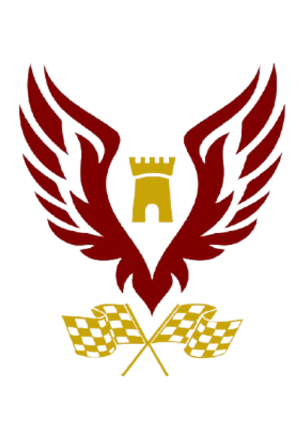
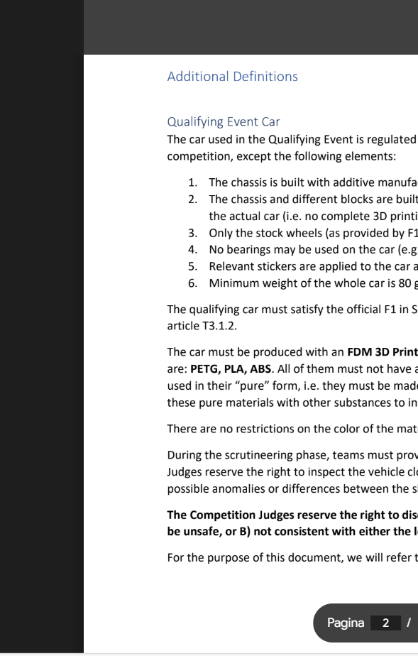
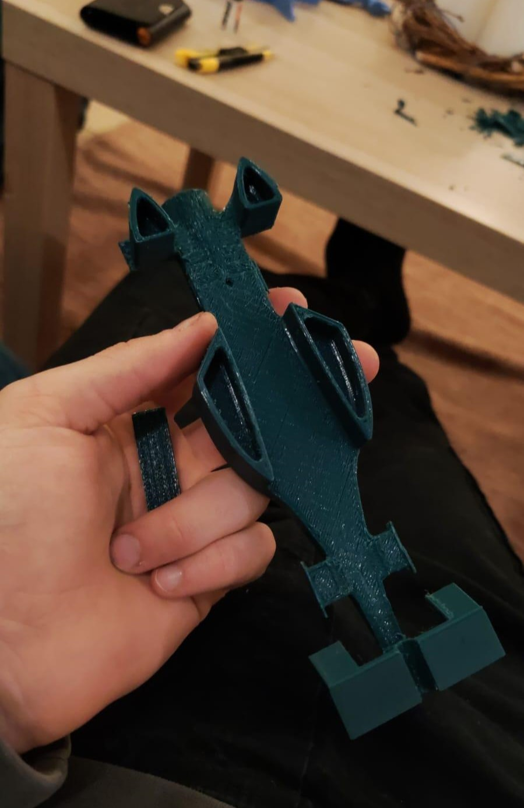

big main image
Alboino Racing
The first step was to read the technical regulations, regarding for example weight and size measures. Some rules made the entire process difficult, especially because if not respected, the judges would then take away points away from us during the competition.

About once a month, with non-regular meetings, F1 in Schools offered informative webinars in which aspects that wern't evident or not defined in the regulations were explained. For example, many online meetings dealt with aerodynamics and how we should modify our car to make it as fast as possible. Others gave advice on economic issues, such as the most effective strategies for finding sponsors.

Another step that took a lot of effort was to define our identity, with a name and an image that would be immediately recognizable. For this, as already said in the Who we are section, we chose the Castle of Alboino, an iconic symbol of the city of Feltre, the place where we come from. Then for the logo, we used Canva, a useful site for creating presentations, that we used to search for images of the tower, the wings and finally the flags.
Having sponsors is not something to overlook, since it's a fundamental necessity, as they are our only economic support. For this project we were committed to not having expenses that would weigh either the school or us students. Fortunately, the search was long but not difficult.

In this part it is described what will happen during the day of the race, such as the mandatory requirements for participants, the timetable, how many points will be awarded for each phase of the project development...
If you didn't know, a portfolio is a presentation in paper format, with the contents similar to what you can find on our website, but in a more detailed version, which contains every detail regarding the procedures followed to prepare for this race, every step and action carried out to achieve the goal of building the F1 car.
The programs used for the development of the car were not chosen by us, but instead provided by the Formula 1 in Schools team and are Fusion 360 and Ansys. Fusion is the program used to model the car which is full of complex uses that require a huge amount of time and dedication to learn. Ansys on the other hand is used to control the aerodynamics and even though it is really easy to use, learning it wasn't at all due to the lack of online guides.

Now that we are at the end of our journey, the only things missing to do are to print the car with the 3D printer that one of our members provided, prepare the presentation and get to the race, where we will have the morning to prepare, and then the afternoon for the actual race and the exhibition.
